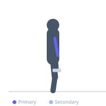
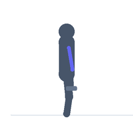

Exercise guide / Concentration Curl
Concentration Curl
The concentration curl is a seated, single-arm curl performed with the elbow braced against the inner thigh, completely eliminating swinging and momentum. This isolation technique concentrates all the load directly on the biceps brachii, particularly the short head, and allows strong peak contraction at the top of the movement. It is one of the most effective exercises for isolating the biceps muscle.
Primary muscles
biceps brachii short head
biceps brachii long head
Secondary muscles
brachialis
Equipment
Dumbbell (Fixed)


Starting position
- Sit on the edge of a flat bench, feet flat on the floor, spread wider than hip-width. Hold a dumbbell in one hand and brace the back of the upper arm against the inner thigh on the same side. Arm is extended downward.
Setup
- Sit with feet wide apart. Use a dumbbell light enough to perform with strict form. The key is brace the elbow against the inner thigh.
Steps
- Step 1: Sit on the bench, feet wide. Hold a dumbbell in one hand, upper arm pressed firmly against the inner thigh.
- Step 2: Begin with the arm fully extended toward the floor, palm facing up.
- Step 3: Exhale and curl the dumbbell upward by bending the elbow, keeping the upper arm stationary against the thigh.
- Step 4: Curl until the forearm is roughly vertical; hold the peak contraction for 1 second, then inhale and lower slowly.
Coaching cues
- Pin the elbow to the inner thigh and do not let it move
- Think about bringing your pinky to your shoulder at the top to maximize short head contraction
Breathing
- Exhale on the curl up; inhale on the controlled descent.
Range of motion
- Full extension at the bottom to full curl at the top — the forearm stops near vertical.
Tempo
- 2-1-3-0 (slow 3-second return for maximum tension)
Common mistakes
- Letting the elbow drift away from the thigh, which removes the isolation
- Swinging the torso to assist the curl at the bottom
Safety
- Full extension at the bottom ensures maximum bicep stretch — do not limit ROM
Training
- hypertrophy: 10–15 reps
- endurance: 15–20 reps
- hypertrophy: 3–4 sets
- endurance: 2–3 sets
- Rest: {'hypertrophy': 60, 'endurance': 45}